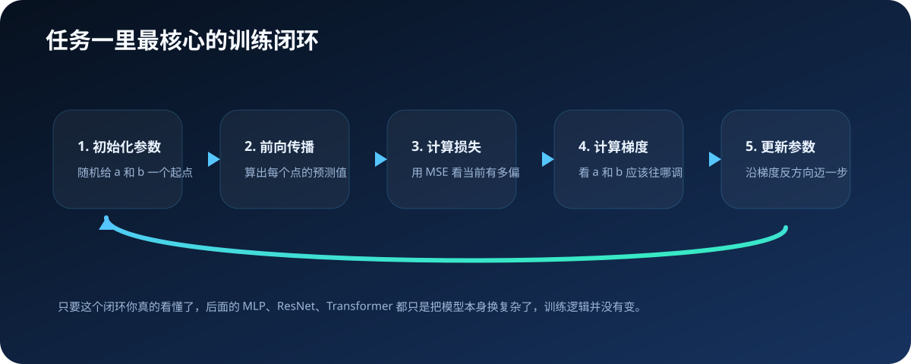
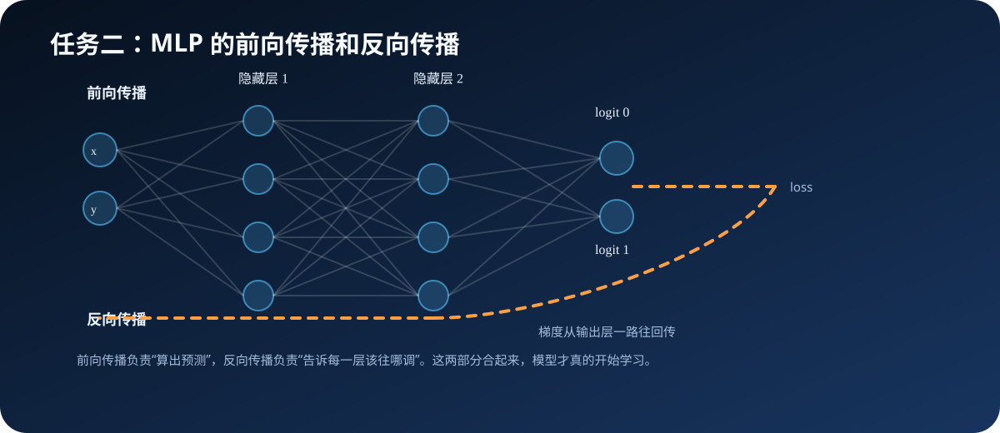
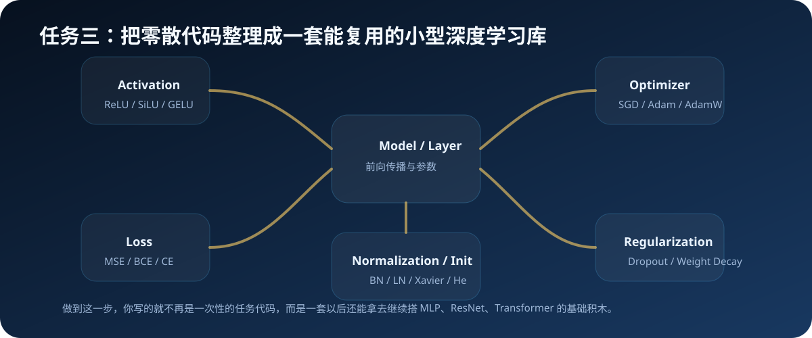
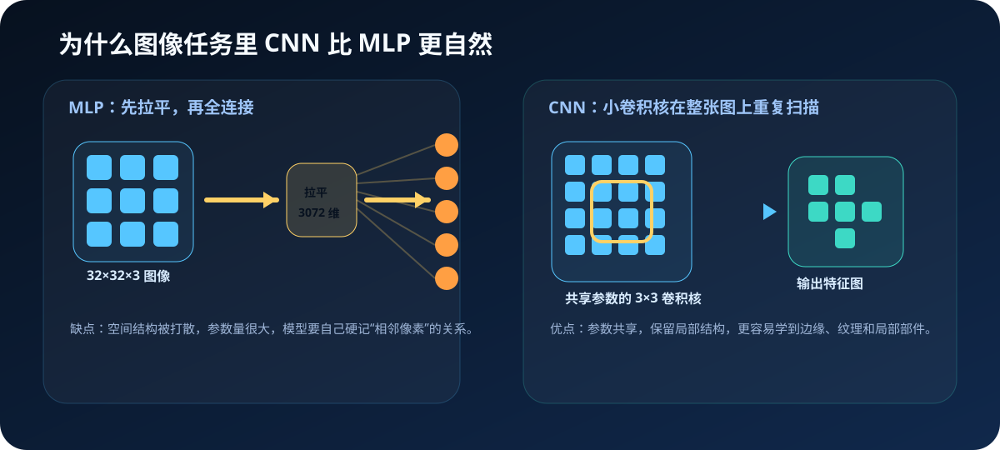
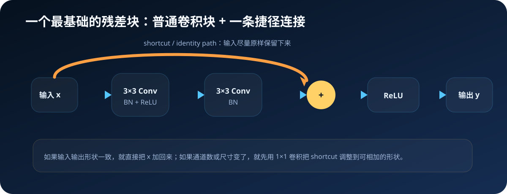
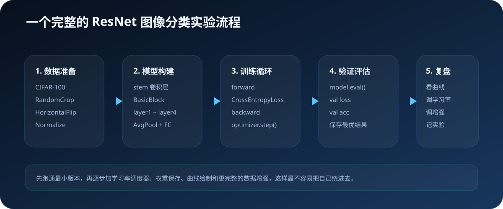

全内容演示动画
从一条直线开始，
一路走到 ResNet 和 Transformer
这套教程现在已经整理成清晰的章节结构，不再是一篇很长很长的主线文稿。你可以把这份 HTML 当成总览，也可以拿它直接做演示。
6主线章节：导读、直线、MLP、小型库、ResNet、Transformer
3实践与项目入口：线性回归、圆形分类、Transformer 文本生成
6关键示意图：训练闭环、MLP、库地图、CNN vs MLP、残差块、ResNet 流程
主线一直没变
模型变得越来越复杂，但训练逻辑一直都还是：前向传播、计算损失、反向传播、更新参数。先把这个看明白，后面很多内容都会轻松得多。
课程结构
主线已经拆成真正的章节
01 课程导读
负责说明怎么读、先学什么、实践文件在哪，不再承载全部正文。
02 从直线到梯度下降
讲模型、参数、损失函数、梯度和学习率，让训练闭环先落地。
03 圆形分类与 MLP
讲非线性、激活函数、交叉熵、多层感知机和反向传播。
04 完善小型深度学习库
把零散代码整理成激活函数、优化器、归一化和正则化模块。
05 ResNet 图像分类
讲卷积为什么适合图像、残差块为什么有用、训练流程怎么搭起来。
06 Transformer 与文本生成
先把方向和项目入口接上，后面会继续补正文。
第一部分
先把训练闭环看懂
- 模型是什么：这里就是一条线 `y=ax+b`
- 损失是什么：用 MSE 衡量预测有多差
- 梯度是什么：告诉参数应该往哪边调
- 学习率是什么：决定每次迈多大一步
- 这五步组成后面所有训练的最小闭环


第二部分
为什么一条线分不开圆
- 线性模型只能画直线边界，圆形边界必须靠非线性
- ReLU 让模型从“只能画直线”变成“能拼出折线和复杂边界”
- MLP 的前向传播负责算预测，反向传播负责算梯度
- 分类任务通常用交叉熵，而不是继续用 MSE
- batch 和 epoch 让训练速度和组织方式都更合理
第三部分
把零散代码整理成一套库
做到这里之后，目标就不再是“能不能跑起来”，而是“我写的这些能力能不能继续复用”。
- 激活函数：ReLU、SiLU、GELU
- 优化器：SGD、Adam、AdamW
- 归一化：BN、LN
- 正则化：Dropout、Weight Decay
- 初始化：Xavier、He


第四部分
图像为什么要靠卷积
- 如果直接拉平成向量，图像的空间结构会被打散
- CNN 会用同一组卷积核在整张图上重复扫描
- 这样参数更少，也更容易学到边缘、纹理和局部部件
- 浅层看边缘，中层看部件，深层看整体结构
ResNet 核心
残差块不是神秘新层，只是多了一条捷径
ResNet 的关键想法是：如果直接学习完整映射太难，那就让网络学“在原输入基础上改多少”。
- 主分支负责学残差
- shortcut 尽量把输入原样送过去
- 梯度因此也多了一条更短的回传路径
- 深层网络不那么容易训崩


ResNet 实验
一个完整的图像分类流程应该长什么样
- 先配 CIFAR-100 和数据增强
- 再写最小 `BasicBlock`
- 再组简化版 ResNet
- 再搭训练循环和验证循环
- 最后盯住 train / val 的 loss 和 acc，而不是只看一个数字
第五部分
Transformer 这条线已经接上，但正文还会继续补
现在已经有什么
- 独立的 Transformer 文本生成项目
- 《红楼梦》文本作为训练语料
- 可运行的 `gpt_tutorial.py`
- 生成结果说明和 README
后面会继续补什么
- 为什么 RNN 会遇到瓶颈
- 注意力机制在解决什么
- Self-Attention 的最小计算过程
- Transformer block 和文本生成训练流程
仓库入口
现在所有内容都已经挂到统一结构下了
README.md
docs/学习路线.md
lessons/
exercises/
solutions/
assets/images/
lessons
课程主线和实践引导，负责解释“为什么”和“怎么做”。
exercises
当前建议你直接运行和修改的练习代码与项目。
solutions
参考实现，最好自己先做，再回来对照。
结尾
这套教程现在更像一条真正可走通的路径了
最推荐的学习顺序
- 先学直线和梯度下降
- 再学圆形分类和 MLP
- 再把零散代码整理成小型库
- 然后进入图像里的 ResNet
- 最后再去看 Transformer 和文本生成
为什么这样安排
- 先把训练逻辑看懂，再看复杂模型
- 先有直觉，再补工程结构
- 先能自己写，再去看框架里的高级模块
- 这条线最适合真正建立底层理解